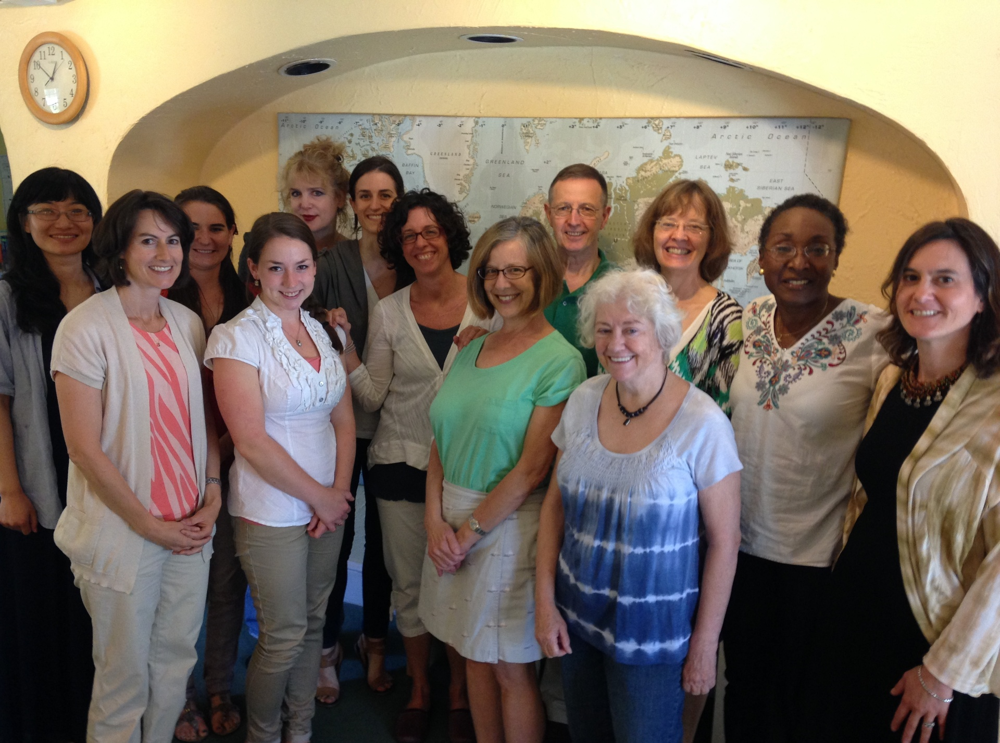

Experience and Excellence
Our approach starts with world-class staff and instructors. We are educators who care deeply about excellence in language education and the relationships formed through service of our students. Our school attracts the finest English language instructors in the Washington, DC metro area, and we do everything that we can to support them in their efforts. Our staff is deeply experienced and will offer you advice about which programs might make sense for you, and our instructors are all certified or have been teaching the English language to international students for many years.
We look forward to meeting you soon!
Staff Biographies
Paul Boesen is the Managing Director of English Now! Paul’s background in education includes experience in international program development and administration, as well as university admissions and enrollment management. Prior to his career in education, Paul worked in investment banking and private equity for the Goldman Sachs Group in New York, Frankfurt, and Singapore; and for the World Economic Forum in Geneva and Beijing. Paul’s academic background is in economics, Asian studies, and law, and he is a graduate of the University of Michigan and Harvard Law School. In addition to his work at English Now!, Paul also serves as Senior Advisor to the GreenPoint Group, a Washington, DC and Beijing-based strategic advisory firm that connects people and resources between the United States and China. Paul was also the first Executive Director of (and still serves as a Special Advisor to) the US-China Education Trust, a Washington-based non-profit organization whose mission is to promote US-China relations through education and exchange for China’s next-generation leaders. Paul resides in Falls Church, Virginia, with his wife, Elizabeth, and their three children.
Kirstie Boyette serves as the Center Manager at English Now!. She was originally born in the Philippines and moved to the United States when she was six years old. She grew up in Gainesville, Florida and attended the University of Florida and graduated with a Bachelor’s of Science in Agricultural Economics. After graduating from college, Kirstie served as a Peace Corps volunteer in Thailand. In her 27 months in Thailand, Kirstie focused on working in the areas of gender and development, income generation, theater, and teaching basic English to primary school students. Kirstie is a recent transplant to Washington, DC and hopes to eventually pursue a career in international youth development. In her free time, Kirstie enjoys cooking and baking, traveling, spending time with family and friends and watching college football.
Jennifer Kagan serves as Director of Program Development and leads the development of our Intensive English Program and other new programs. Jennifer enjoys working with English language learners of all backgrounds. She is an active parent volunteer in Montgomery County Public Schools, organizing events of interest to new and international families. Jennifer began teaching English as a Second Language while working as an elementary school teacher in Los Angeles through Teach For America. In addition to her teaching experience, she has worked for education-focused businesses, developing teacher support materials and leading teacher workshops. Jennifer is a native of Boston and a graduate of the University of Pennsylvania with a Bachelor of Arts in American History. She is conversant in Spanish and has studied Japanese. When she’s not teaching English, Jennifer enjoys biking, playing Scrabble, and spending time with her family.
Linda La Pierre serves as Director of Student Engagement and leads the development of our conversation class curriculum and instruction model. Linda is an educator and artist with more than twelve years of experience teaching English to adults from all over the world. She has worked in a variety of educational settings both here and abroad, including college-level Intensive English Programs, a community ESL program for adult immigrants, and a private language school where she taught ESL to the spouses of foreign diplomats. She has also created individualized ESL classes as a private tutor for international visiting professionals. Linda studied Community Service Education and Applied Linguistics at the graduate level at Cornell University, and completed a Bachelor’s Degree in Spanish at Emmanuel College in Boston. In addition to Spanish, she has studied French, Polish, Serbo-Croatian, and Portuguese; she has lived and worked in France, Serbia, Poland, and Spain. Previous work experience has also included positions in the fields of media production and community outreach. As a painter, Linda has worked in dry pastel, watercolor, and acrylic. She is currently experimenting with stop-action animation using a digital camera and personal computer. Linda lives with her family in Northern Virginia.
April Sun, Student Services Manager, was born in Shenyang in Northeastern China and understands the challenges that English language learners face. She started studying English 16 years ago and studied English Education at a Dalian University of Foreign Languages. April’s first trip to the United States was to participate in a work/study program at Disney World, and she later completed her M.A. at George Mason University. April majored at in Curriculum and Instruction in second language acquisition at George Mason, with a concentration on international education. April enjoys student administration and also teaches Chinese language. She loves traveling, swimming, reading, playing volleyball, cooking, and fishing.
Selected Instructor Biographies
Ellen Alderton has more than 20 years of rich and varied experience in education. She has worked in informal education outreach with the M.I.T. Museum in Massachusetts, directed training programs for the United Nations in Austria, and executive produced national behavioral change communications campaigns targeting U.S. Latino immigrants for Hispanic Radio Network in Washington, D.C. She has also taught English at the university level for Marymount University in Virginia and for the M.I.T. Graduate Writing Department in Massachusetts. Ellen particularly honed her skills in English as a Second Language instruction in Vienna, Austria and Bologna, Italy. Ellen lived overseas for 13 years and has worked and studied in six foreign languages. Besides working for English Now!, Ellen works for the Peace Corps, overseeing worldwide marketing for the Peace Corps’ university partnerships, a network of more than 120 American graduate schools. She received her bachelor’s degree in psychology with honors from Wellesley College and her master’s degree in international relations from Johns Hopkins University SAIS.
Andrea Barron is an English Language Instructor for English Now! and has a background as a life-long civic activist. Andrea worked at The Washington Center for Internships and Academic Seminars for 12 years, where she conceived and managed projects on Immigrant Rights, Domestic Violence, Torture Abolition, Israeli-Palestinian Peace, Global Women’s Rights, Homelessness and other issues. Previously she also served as the director of English Language Programs at Northern Virginia Family Service and Youth Education La Alianza Hispana in Boston, Mass. Andrea is also an Interfaith leader who established the nation’s only annual Jewish-Muslim Passover Seder held in a major mosque, the All Dulles Area Muslim Society (ADAMS) Center in Sterling, VA. Andrea has been an Adjunct Professor of History at George Mason University in Fairfax Virginia since 1999. She has taught English at all levels—from Central American construction workers to highly-educated professionals including diplomats and World Bank officials. Andrea is fluent in Spanish and is always trying to improve her Arabic.
Bruce Benton holds M.A. degrees from Johns Hopkins University (International Studies) and the University of Michigan (Economics). He taught English as a Peace Corps volunteer in Guinea, West Africa, and subsequently at the Institute for Foreign Languages in Washington, DC. Following the Peace Corps, he served as Deputy Director in the U.S. Treasury for nine years, and as a senior Foreign Policy Advisor to a Congressman and Senator on Capitol Hill for three years. From 1985-2005, Bruce managed the World Bank’s widely-acclaimed efforts to eliminate river blindness in Africa. Until joining the teaching staff at English Now in 2009, Bruce taught international health as an Assistant Professor at Georgetown University. He lives with his wife, Patricia, in Bethesda, Maryland. They have four children and are avid travelers.
Margaret Whitman Blair (“Peggy”) has been a journalist as well as an author, and she has taught English as a foreign language in Japan and with the Peace Corps in Thailand. Her novels include a series of Civil War time-travel books: Brothers at War, House of Spies, and The Sand Castle. She also writes history books for The National Geographic including The Roaring 20: The First Cross-Country Air Race for Women which received the 2007 Peace Corps Writers Award for Best Children's Writing. Currently in the works are a black history book and a novel set in colonial Williamsburg. For the past decade, she has taught a workshop in Writing the Historical Novel at The Writer's Center in Bethesda, Maryland, and has lectured on the subject for Smithsonian Associates. She is active in The Children's Book Guild of Washington, DC. Peggy received both her B.A. and her M.A. from American University.
Ellen Clark is an ESOL teacher at a middle school in Prince Georges County. She earned her B.A. in English Literature and Studies in Women and Gender at the University of Virginia. She claims Charlottesville, Virginia as home, though she lived in several countries and states growing up: Israel, Oman, England, Georgia, Idaho, to name a few. After college, she joined the Peace Corps, and taught English in the Republic of Georgia at a small village school. She recently earned a Master’s in Education at George Washington University. In her spare time, Ellen likes to read, practice yoga, and cook.
Kathy Philpott Costa is enthusiastic about teaching English to students of all levels and backgrounds. A Colorado native, outdoor enthusiast and former international business lawyer, she returned to her passion for language learning after spending years studying and working in Europe, Brazil, and the U.S. and actively volunteering in her children’s schools. She received a B.A. in French from Colgate University, a J.D. from William & Mary Law School, an LL.M. from the University of London, and more recently, a TEFL Certificate from Georgetown University. Kathy has always sought opportunities to tutor adults in English and to continue her own process of learning Portuguese, French, and Spanish. Having experienced the challenge of learning second languages in other countries, she has a deep appreciation of people from different cultures and linguistic backgrounds and identifies keenly with adults learning the language and culture of the U.S. Kathy is married to a Brazilian, and her family speaks both English and Portuguese at home.
Michael David teaches ESOL chiefly to students at the high intermediate and advanced levels. A graduate of Hobart & Wm Smith Colleges, Michael first served in the US Air Force and then had a successful career in business-to-business sales. Following several decades of working in business, Michael decided to pursue a career teaching ESOL. He then earned a certificate from Lado International College in teaching English as a foreign language. Michael lives in Takoma Park, Maryland, and enjoys antique automobiles, vintage western swing and country music, cooking, reading, and politics.
Marian DeAngelo is originally from Bethesda, Maryland. She earned her B.A. degree in Psychology from Syracuse University and her M.A. in Industrial/Organizational Psychology from Xavier University. After moving, with her husband, from the D.C. area to San Diego, Marian continued her education and earned her teaching certification. She then taught multiple subjects at the elementary school level in both San Diego and Denver, until moving to Germany where Marian began teaching English at the corporate and high school levels. Marian feels great reward in seeing her students progress and become confident in speaking aloud. In her free time, Marian enjoys hiking, biking, skiing, horseback riding, fitness and continuing education classes, traveling, bird watching, movies, music, cooking and getting together with friends.
Margareta Feller came to English Now! after retiring from a 30-year career in the Federal Government. A major part of her work with the government was as a foreign language teacher teaching Swedish and English. She first came to the United States from Sweden as a college student after having studied English since middle school. She got her B.A. majoring in French at Wheaton College in Massachusetts and later received her M.A. in linguistics at American University. Language teaching has always been her passion. Now that she is retired she would like to help students who want to learn English or improve their English proficiency to feel more at home in American culture.
Brycie Gold is a graduate of New York University, with a major in Applied Psychology and minor in Italian Studies. Brycie spent a year as an undergraduate in Florence, Italy studying and tutoring. She later became CELTA certified and spent three years teaching English abroad in Fuzhou, Fujian, China, before returning to the U.S. and joining English Now! She currently writes articles for Teaching House Nomads, an online travel and ESL blog (teachinghouse.com/blog). A native of Washington, DC, she enjoys traveling, meeting new people, learning about cultures, studying languages and eating chocolate.
Alisa Harris is a native Washingtonian who grew up in suburban Maryland. She received her B.A. from the University of Virginia and worked in business for several years in New York City and in Washington D.C. before pursuing her love of teaching. Alisa earned her Master's degree in Early Childhood and Elementary Education from Trinity University of Washington and then worked for almost ten years as a teacher with Montgomery County Public Schools (MCPS) in Maryland. She later returned to Trinity and earned a second Master's degree in Counseling, while continuing to work part-time as a regular ESOL substitute teacher with MCPS and as an English Instructor to children, teenagers and adults at English Now! Alisa currently teaches early childhood grades at an independent private school in Bethesda, Maryland and continues to teach English to students of all ages at English Now! Alisa resides in Silver Spring, Maryland. In her spare time, she enjoys traveling, reading, playing word games and spending time with family and friends.
Jessica Hoffman-Schmitz is originally from Boston, Massachusetts. Jessica’s path to language education is a fascinating one. She attained her Bachelor of Arts degree from Brandeis University in Spanish Language and Literature and minored in Elementary Education. After spending semesters and summers studying Spanish abroad, including time spent in homestays in Mexico and in Spain, she spent her final summer semester teaching English and Hebrew at a bilingual K-8 School in Buenos Aires, Argentina. Then she decided that once she knew enough Spanish, she would go on to learn Portuguese! So after graduation, she earned a TEFL certificate from Bridge Linguatech in Rio de Janeiro, Brazil, where she spent a year teaching Business English and met her Brazilian husband! They then moved back to the U.S., where he prepared for medical residency and she worked in The Boston Public Schools as an ESL testing administrator in a bilingual Spanish/Portuguese classroom setting. But her international travel was not complete, as she and her husband next went to teach at a bilingual K-12 school in Bangkok, Thailand, where she taught language arts while her husband taught math and science. Then it was back to the U.S., this time to Minneapolis, where her husband was accepted into residency at The University of Minnesota. Jessica decided to go back to school as well, earning a Master of Arts degree from The University of Minnesota in Adult and Human Resource Education. She holds a teaching license in Adult Basic Education and spent an intern year working as an ESL teacher for refugees from Somalia and Sudan in an adult learning Center. She also taught English and other languages and TOEFL preparation part time at that time at Kaplan and Berlitz. For the last three years, Jessica has been living in Norfolk, Virginia, teaching and designing the Adult Basic, Adult Secondary and GED curriculum for the Norfolk Public Schools. She worked with students on educational goals ranging from basic literacy, beginning, intermediate, secondary, all the way to GED level. Students were from diverse backgrounds, age groups, and socio-economic circumstances. In Norfolk, Jessica participated in many trainings and workshops through VALRC (Virginia Adult Learning and Resource Center) and Virginia Commonwealth University. She is a recent transplant to Bethesda, Maryland, where her husband is stationed at Walter Reed Naval Medical Center through the U.S. Navy.
Jennifer Kagan is excited to be working with English language learners of all backgrounds. She is an active parent volunteer in Montgomery County Public Schools, organizing events of interest to new and international families. Jennifer began teaching English as a Second Language while working as an elementary school teacher in Los Angeles through Teach For America. In addition to her teaching experience, she has worked for education-focused businesses, developing teacher support materials and leading teacher workshops. Jennifer is a native of Boston and a graduate of the University of Pennsylvania with a Bachelor of Arts in American History. She is conversant in Spanish and has studied Japanese. When she’s not teaching English, Jennifer enjoys biking, playing Scrabble, and spending time with her family. In addition to her work teaching in our Intensive English Program, Jennifer serves as our Director of Program Development, working with staff and instructors to develop new and refine existing programs to better serve our students.
Linda La Pierre is an educator and artist with more than ten years of experience teaching English to adults from all over the world. She has worked in a variety of educational settings both here and abroad, including college-level Intensive English Programs, a community ESL program for adult immigrants, and a private language school where she taught ESL to the spouses of foreign diplomats. She has also created individualized ESL classes as a private tutor for international visiting professionals. Linda studied Community Service Education and Applied Linguistics at the graduate level at Cornell University, and completed a Bachelor’s Degree in Spanish at Emmanuel College in Boston. In addition to Spanish, she has studied French, Polish, Serbo-Croatian, and Portuguese; she has lived and worked in France, Serbia, Poland, and Spain. Previous work experience has also included positions in the fields of media production and community outreach. As a painter, Linda has worked in dry pastel, watercolor, and acrylic. She is currently experimenting with stop-action animation using a digital camera and personal computer. Linda lives with her family in Northern Virginia. In addition to her work teaching in our Conversation Course program as well as private lessons, Linda serves as our Director of Student Engagement, leading initiatives to help English Now! serve our students better by helping them engage with other students and in society.
Dan Levenson received his B.A. in Linguistics from Cornell University, and has been teaching English as a foreign language for over seven years. In 2005, he began as an English teacher in Spain, where he spent the next four years teaching students from a variety of professions, age groups, and interests. Relocating to East Asia in 2009, he was based in Taipei, Taiwan, where he focused on teaching professional English, as well as coaching students for academic tests. Finally, in 2012, he returned to his home country to spend time with his family. He is an avid reader, and enjoys traveling.
Barbara Lewis began teaching English as a Peace Corps volunteer for two years in an African village in the 1960s. She completed her undergraduate studies with a B.A. from the University of Michigan, and she earned an M.A. in adult education from Cornell University. Barbara has also studied at Dartmouth College, Columbia University and SUNY Binghamton to become certified to teach ESOL and special education and has taught in Africa, Asia, Europe and the United States. Barbara has been teaching at English Now! for many years. Why? She says, “It is because I thoroughly enjoy all the interesting and wonderful students that I meet here!”
Alison McCaul developed a passion for teaching during three years on the JET Program serving as an English teacher in Nagasaki, Japan. She has taught ESL in Japan and India and has served as a volunteer ESL tutor in the Washington, D.C. area along with her teaching at English Now!. She has a B.A. in history from Radford University. Prior to teaching ESL, Alison worked as a Research Analyst at the International Monetary Fund. She traveled extensively to the African Indian Ocean countries for her work. While she enjoyed the challenge of work at the IMF, Alison decided teaching and interacting with ESL students was much more rewarding as a career. Alison enjoys the outdoors and spending time with her family. She has traveled extensively and has lived with her husband and three young children in Madagascar and India. They all share a love of travel, language, and adventure. They now reside in Bethesda, Maryland.
Liz Paul began teaching ESL as a Peace Corps volunteer in Kyrgyzstan, where she met and married her Russian husband. Liz taught college writing and English for over six years, working with students from Brazil, Uruguay, South Korea, Indonesia, Kenya, Tanzania, Ghana, Germany, and Russia as well as the U.S. Prior to teaching, she created content for the Library of Congress’s educational website, The Learning Page, and was the administrative assistant of a group home for at-risk youth. Originally from a Chicago suburb, Liz has lived in Illinois, Washington, Oregon, Connecticut, Virginia, and Washington, D.C. Her interests in travel, nature, art, and language have taken her to Mexico, East Africa, Western Europe, St. Petersburg, and Istanbul. She holds an MA in English from the University of Virginia and is earning an MFA in creative writing from the Vermont College of Fine Arts.
Cristina Rendueles-Stern was born in New York City and has had a rich and varied life. She lived as a young child in Manila, the Philippines; moved to Washington D.C., where she attended elementary school; and returned to New York City for high school and undergraduate studies at Marymount Manhattan College. Next was Madrid, Spain, where she taught English as a Foreign Language at the Casa Americana, before returning to the U.S. 11 years later to study at the Graduate School of Education at the University of Pennsylvania. After receiving her M.A. in Education, Cristina settled in Washington D.C., where she taught ESOL in the D.C. Public School System. Soon after this she took a teaching position for Montgomery County Public Schools, where she taught ESOL for 20 years. Cristina retired from MCPS in 2011 and has taught English at the Rockville Senior Center, International Language Institute, Linkages to Learning, the Cambridge Institute, and now English Now! Cristina has been married for 20 years and lives with her husband, stepson, two dogs, and three cats in Montgomery Village.
Joann Robertson teaches conversational, business and legal English. She teaches international attorneys, journalists, diplomats, military officials, and clergy the skills of American public speaking, advocacy and negotiation. She enjoys meeting people from all over the world and is very happy to be joining the English Now! faculty. Joann is also an experienced trial attorney with an AV rating. She is a former Associate County Attorney with Montgomery County Attorney’s Office where she served as Chief of Litigation from 1986 - 2006. During this time she oversaw a staff of eight attorneys and tried over 35 jury trials and 100 bench trials and administrative hearings. She litigated serious personal injury, civil rights, employment discrimination and child welfare cases in Maryland and District of Columbia District and Circuit Courts, as well as the Federal District Courts of Maryland and the District of Columbia. She has also presented and argued briefs before the Maryland Court of Appeals, the Fourth Circuit Court of Appeals and the District of Columbia Court of Appeals. After retiring as Chief of Litigation, she was rehired by the County Attorney’s Office to litigate child welfare cases from 2006-2010. In 2009, Joann became certified to teach ESL by the Lado Institute TEFL program and was hired by Lado to teach English to foreign students. She has also been teaching group and individual ESL classes at the Brazilian Naval Commission, and the Embassies of Brazil and Peru. Since 2011, she has been training and coaching teacher trainees for the Lado TEFL teacher certification program. During 2012-2013, Joann was an Adjunct Professor at American University International Law School, teaching legal research and writing to international law school students.
Elizabeth Quillin is eager to foster a creative learning environment for her students. Her passion for teaching, children and interacting with global citizens has taken her to China and most recently Switzerland. In Beijing, she developed an English immersion curriculum and taught 1st grade in English to local Chinese with no prior English exposure. A Virginia native, she spent time developing curriculum and lesson plans at a private school in Arlington as well as tailoring individualized activities for students with special needs. Elizabeth enjoys traveling, people, baking, hiking and the Swiss Alps. She earned her B.A. in Journalism and Mass Communication from the University of Georgia.
Laurel Reiner has a profoundly international background and brings a lifetime of perspective to the classroom. Laurel was born in Paris, France, spent the first four years of her life there, and then lived in Santiago, Chile between ages five and nine. By the age of nine, she spoke French and Spanish fluently, and she continued her international experience living in Costa Rica for two years in her early teens, then spent her junior year abroad in Israel where she studied Hebrew. Laurel has continued with Spanish and French and used Spanish professionaly for over 30 years, as a community organizer working for the United Farm Workers' Union, organizing John Kerry's Congressional campaign as his Latino organizer registering people to vote in Lowell and Lawrence, Massachusetts, and later in both those communities as a CETA worker. Laurel's ESL career began in 1975 after graduating from college and has continued in Massachusetts, California and in the D.C. area. She has taught, run a community ESL program for adults, and taught locally at Montgomery College, the Fairfax County Adult Education program, the Embassy of Japan, and at Japanese-affiliated businesses. She has also created a Spanish immersion program for workers at the AFL-CIO as well as at three hospitals in D.C. and Virginia. As additional elements of her diverse background, Laurel has also worked in fundraising and in program development with AmeriCorps, and in a local school as a bilingual social worker. Laurel has a Master's in Social Work.
Ann Rust was born and raised in Puerto Rico and learned two languages, Spanish and English, as a native speaker. Ann graduated from William Smith College (Geneva, New York) with teaching certification and a B.A. in Spanish and French. Later, she worked for USAID, taught in a kindergarten program, and worked as a physician’s assistant and lab technician. Ann has been teaching ESOL since 1995. She completed an ESL certificate at American University and has been teaching atEnglish Now! since 1998. Ann teaches many levels and types of classes, and has discovered, to her surprise, that she loves teaching grammar! Ann lives in Bethesda, Maryland, with her husband and youngest daughter, and has two other children and a granddaughter in the area.
Nathaniel Selby is originally from Denver, Colorado. He received his Bachelor’s Degree from the University of Colorado at Boulder; earning a double major in History and Political Science. After University, He served as a Peace Corps Girls Education and Empowerment Volunteer in Togo, Africa. He has lived in D.C. for six years and still has not gotten used to the hot summers. In addition to working as an English instructor, he is also a Sr. Accreditation Analyst at Western Union Business Solutions. His interests include history, politics, technology, French, and running.
Kendra Tippens fell in love with teaching English while getting her TEFL certificate and teaching in Moscow, Russia. Kendra was born and raised in Atlanta, Georgia. She received B.A. degrees in US History and Russian from Sewanee: The University of the South, a small college in rural Tennessee. Upon her return to the US, she has continued teaching – both at English Now! and with refugees through the IRC – and in her spare time enjoys running and solving Rubik's cubes.
Jane Turner joined English Now! in August 2012 as an English conversation teacher and has been part of the morning intensive teaching team since June 2013. Jane lives in Rockville, Maryland, with her husband of 31 years, Catholic Deacon and retired broadcast technician, Al Turner. She has a BA degree in Radio Communications from Howard University in Washington, DC. Her lifetime experiences include, before marriage, a radio news broadcasting career in Washington, as a news anchor, field reporter, and assignment editor. She took up home-making full-time for her widower husband and his five small children. They raised two sons and three daughters to adulthood. Alongside a host of volunteer and entrepreneurial pursuits, Jane re-entered the workforce about ten years ago, teaching religion and substitute teaching at several middle schools in the Archdiocese of Washington with her catechist certification. Jane earned her TEFL certificate from Lado International College, Washington, DC. When she can find the time, Jane enjoys such outdoor activities as gardening and walking. Family time is the catalyst for much of her travels these days to keep up with 15 grandchildren, octogenarian parents, and other relatives around the country. Her current projects: family ancestry research and finishing a quilt begun 80 years ago by her maternal grandmother.
Heather Tzanninis teaches in a broad array of ESOL concentrations, mostly at the intermediate to advanced levels. She derives great satisfaction from preparing students for the TOEFL. Her approach to TOEFL prep includes building students’ facility with a set of strategies tailored to each of the exam’s four sections, with a special emphasis on writing. Prior to her ESOL teaching career, Heather spent 19 years at the International Monetary Fund. She holds a TEFL certificate, and a certificate in Teaching International English Exam Preparation (TIEEP), with a concentration on TOEFL, which she earned at the the Peruvian branch of Máximo Nivel, an internationally accredited executive language center. Heather also holds a B.A. in Radio and Television Communications from George Washington University. She lives in Chevy Chase, Maryland, and her grown son, Nicholas, lives in New York.
For more information about English Now! and our unique approach to English language study, please visit the school or contact us.